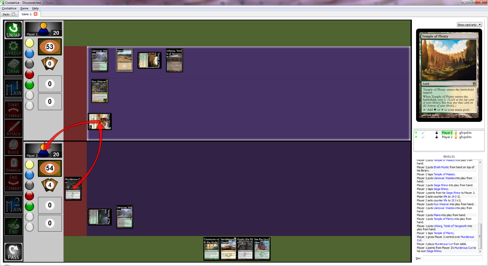

Cockatrice is a free, open-source Magic: the Gathering client that allows you to build decks and play them against other people online. By supplying it with an appropriate card data file, you can play with fan-made custom cards too.
Cockatrice can be downloaded from https://cockatrice.github.io/. It's available for Windows, Mac, and Ubuntu derivatives. Installation instructions are provided on the website.